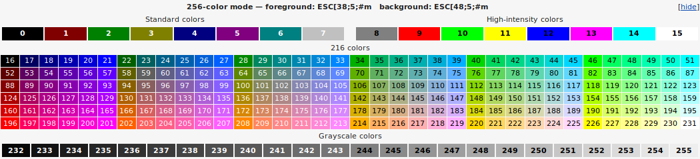
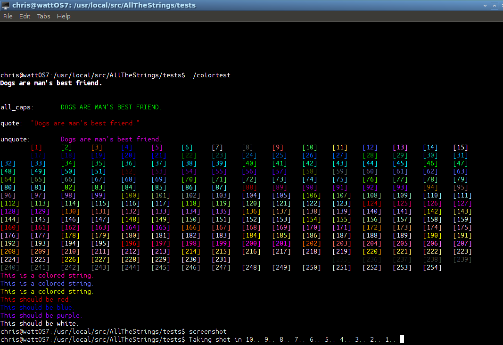

All The Strings
An easy-to-use C++ Strings Library
| Programmer: | Chris Reid |
| Year: | 2018 |
| Version: | 1.2 |
| contact: | spikeysnack@gmail.com |
INTRO
Hello and welcome.
AllTheStrings is a C++ strings utlity library
that makes programming with strings and string manipulation easy.
One feature of AllTheStrings is that it makes an effort to be non-destructive of the original string. Every function returns a brand new object or collection of new objects. This functional approach ensures that data is only changed permanently when you want it to be; the original string is always available for use. Most of string formatting is in the output stage, usually the original string is used again in its original form or discarded after that. This may not be the fastest or most efficient way to work with strings, but it is the safest, and often the easiest. The STL std::string class already has optimized assignment and copying built in, so unless you are creating huge strings ( and then you should write your own huge string library) there should be no problem with speed or memory. All the AllTheStrings functions are enclosed in the namespace AllTheStrings. It is included automatically when including the AllTheStrings.h header. You can just call the functions without any preamble.
Usage
Using the library is an easy process:
- #include "AllTheStrings.H" Single Library version (no object file needed)
- #include "AllTheStrings.h"
- link in AllTheStrings.o into your compile.
- or add libAllTheStrings.so as
-lAllTheStringsinto your compile.#include <iostream> #include <string> #include "AllTheStrings.h" // imports functions and "AllTheStrings" namespace too namespace test{ using std::string; using std::cout; using std::endl; }; int main(int argc, char* argv[] , char* env[]) { using namespace test; // adds only the objects we are using string s{"Dogs are man's best friend."}; cout << s << "\n"; string t{s}; string tmp{"best"}; // all caps cout << "all_caps:\t" << all_caps(t) << "\n"; // quote cout << "quote:\t" << quote(t) << "\n"; // unquote cout << "unquote:\t" << unquote(quote(t)) << endl; string x = " This \n string Has \r probelms \n .\n "; cout << x << "\n"; // chomp string y = chomp(x); cout << "chomp:\t" << y << endl; // sentence case y = sentence_case(y); cout << "sentence_case:\t" << y << endl; // replace word y = replace_word(y, "probelms .", "problems."); cout << "replace_word:\t" << y << endl; // find word auto pos = y.find("has"); //insert at position z = insert_word(y, "no" , pos+3) cout << "insert_word:\t" << z << endl; return 0; }Dogs are man's best friend. all_caps: DOGS ARE MAN'S BEST FRIEND. quote: "Dogs are man's best friend." unquote: Dogs are man's best friend. This probelms . chomp: This string Has probelms . sentence_case: This string has probelms . replace_word: This string has problems. insert_word: This string has no problems.
LICENSE
Free for all C++11 uses. No guarantees implied, or given.
INSTALLATION
Installation is by default into /usr/local/lib
and /usr/local/include
and requires admin or sudo privileges.
Alternatively you may put libAllTheStrins.so.1 and its
link libAllTheStrings.so and the associated header
AllTheStrings.h
in a devel location of your choosing.
Use a standard "make all" and "make install" command.
-- make all
-- (optionally) make tests and run the tests in the test directory
before installing system-wide.
-- sudo make install
-- put "#include AllTheStrings.h" in your C++ program.
-- add AllTheStrings.o to your compilation string.
or
-- make libAllTheStrings.so (default)
This will create libAllTheStrings.so.1 and a soft link to it as libAllTheStrings.so. -- put AllTheStrings.h in a dir recognized by your compiler chain
or the current directory.
-- put "#include AllTheStrings.h" in your C program.
-- add -lAllTheStrings to your compilation command.
-- or use rpath (relative path)
Makefile:
LIBINCLUDES=$(PWD)
-L -Wl,-rpath=$(LIBINCLUDES)/
-- compile and run
NORMAL USAGE
Simple, normal object-oriented C++ programming:
#include <iostream> #include <string> string y{" (y) "}; cout << "trim:\t" << "[" << trim(y) << "]\n"; string z = pad(y, 20, 'X' ); cout << "pad:\t"<< "[" << z << "]\n"; cout << "[" << y << "]\n"; cout << "rm_dblspaces:\t" << "[" << rm_dblspaces(y) << "]\n"; z = " [ q w t e e 4 5 66 7 77 7 888 ]"; cout << "[" << z << "]\n"; cout << "[" << rm_dblspaces(z) << "]\n";
[ (y) ] rm_dblspaces: [ (y) ] [ [ q w t e e 4 5 66 7 77 7 888 ]] [ [ q w t e e 4 5 66 7 77 7 888 ]]z = "1234567890aBcDeFgHiKlMnOpQrStUvWxYz"; cout <<"truncate:\t " << "[" << truncate(z, 10) << "]\n"; cout << "all_caps:\t" << "[" << all_caps(z) << "]\n"; cout << "uncapitalize:\t" << "[" << uncapitalize(z) << "]\n"; s = "This Dog has no REASON to love men."; cout << "[" << s << "]\n"; cout << "sentence_case:\t" << "[" << sentence_case(s) << "]\n"; cout << "title_case:\t" << "[" << title_case(s) << "]\n"; cout << "[" << title_case(uncapitalize(s)) << "]\n";
Splitting and Joining
A few AllTheStrings functions generate and receive string vectors, not individual strings. These are not complicated, they are a simplestd::vector<std::string>. split simply splits a string into a vector by spaces.auto v = split(s); cout << "|\t" for(auto s : v) cout << s << "|\t"; cout << endl;join takes a string vector and makes a single string out of it. You can specify the conjoiner character bewteen strings.
apply takes a string function and performs it on a list of arguments, then returns a single string of concatenated results.
string t = apply( reverse , "dog" , "cat", "bird", "fish", "banana");
cout << t << "\n";
ananab hsif drib tac god
applytoall takes a string function and performs it on a list of arguments, then returns a string vector containing each of the results.
svector v = applytoall( all_caps ,"dog" , "cat", "bird", "fish", "banana");
for (string s : v) cout << s << "\n";
DOG
CAT
BIRD
FISH
BANANA
random
random can generate random strings of characters
and mix up the letters in a string.
cout << "random:\n";
for( size_t i = 0; i < 40 ; i++)
cout << random(t,5) << "\t";
cout << "\n";
cout << "count o:\t";
cout << count(t, "o") << endl;
cout << "count :\t";
cout << word_count(t, ":") << endl;
auto aa = repeat("X X" , 10);
cout << aa << "\n";
int xi=5, yi=100;
float af = 10.103, bf=-9.99e16;
string dd{"some enchanted evening"};
auto rv = applytoall( reverse , xi ,yi, af, bf , dd);
for (auto s : rv) cout << s << "\n";
auto jj = join(rv, "/");
cout << jj << endl;
auto rjj = reverse(jj);
auto jjv = tokenize( rjj, "/");
for (auto s: jjv) cout << s << "\t";
random:
onnsr trrr n gr a'roa fsn'a eebmd sa erdef snass rfbfb Ds'da aom '
b D s iD ' rr' s nsn e'tsf non s osgba i sds nmd b'er gbotn ssbo fre
D d eram e ' ftef Do omb e nmDr' Demeb nf . 'rn a e as egse d abt
m'.rD r ri
count o: 1
count: 9
X XX XX XX XX XX XX XX XX XX X
5
001
301.01
61+e3000099.9-
emos
detnahcne
gnineve
5/001/301.01/61+e3000099.9-/emos/detnahcne/gnineve
evening enchanted some -9.9900003e+16 10.103 100
repaginate
repaginate reformats a paragraph string to fit a page.
You set the page width, indent, indentall (bool), and if indentall any additional indentation of the first line beyond that.
string P = R"WHAT(
This is a long paragraph that may or may not have
a bunch of words that don't make a lot of sense, but that is just because
you don't have a clue as to what is going on here. This is what we call a
RAW string. It has an R\"( text )\" enclosing it. Weird, but effective.
I set the pagination to a small screen 40 chars.)WHAT";
cout << P << "\n" << endl;
// page width: 40, indent:6, intdent_all:true , additional first indent:5
auto Q = repaginate(P, 40, 6 , true, 5);
cout << Q << endl;
This is a long paragraph that may or may not have
a bunch of words that don't make a lot of sense, but that is just because
you don't have a clue as to what is going on here. This is what we call a
RAW string. It has an R\"( text )\" enclosing it. Weird, but effective.
I set the pagination to a small screen 40 chars.
This is a long paragraph that may or may
not have a bunch of words that don't make a lot of sense,
but that is just because you don't have a clue as to
what is going on here. This is what we call a RAW string.
It has an R\"( text )\" enclosing
it. Weird, but effective. I set the pagination to
a small screen 40 chars.
rep and frep
rep and frep create a numerical string
with a set precision and formatting. rep does integer types and frep does floating point types. rep will call frep instead if the argument is a floating point number.
cout << " double:\t" << std::setprecision(20)
<< fprep( 11.000002 * 35.5387, 20, std::scientific)
<< endl;
const double PI = 3.141592653589793;
cout << "fixed:\t" << rep( PI, std::fixed) << "\n";
double: 3.90925771077399986098e+02
fixed: 3.14159265358979311600
format
format is the equivalent of std::sprintf.
In that it formats a string with printf format codes. (It is not completely safe, in that incorrect formatting codes can lead to seg faults, just like in C. Be careful.)
string formatstr("this is a %s string:\t%zu\t%f and all that %s \n");
string bb;
bb = format( formatstr.c_str() , "format" , 567 , 3.14159 , "stuff", 13 );
cout << bb ;
this is a format string: 567 3.141590 and all that stuff
-10.200000
-10
ats_banner(); // ASCII ART
_____ _ _ _____ _ _____ _ _
| _ | | | |_ _| |_ ___ | __| |_ ___|_|___ ___ ___
| | | | | | | | -_| |__ | _| _| | | . |_ -|
|__|__|_|_| |_| |_|_|___| |_____|_| |_| |_|_|_|_ |___|
|___|
ADVANCED USAGE
Value
template<typename T> T value( const std::string& s);The value template function returns the string as a numerical value if it can and a string if it cannot. Strings such as "3.14159" can become values with a type given as a template like:
string s{ "3.14159"};
double pi = value(s);
cout << pi << endl;
int i = value(s);
cout << i << endl;
3.141590
3
interpolate
interpolate substitutes the positional arguments given into a string.template<typename S, typename... Args> string interpolate( const S& orig , const Args&... args);The numbered arguments in braces are replaced by the positional arguments given to the function. You don't have to use them all, but you must have at least as many as the larges positional number in the string. The braced tokens don't need to be in order.
int main()
{
string s{"This is {4} and {2} and {3} and {1}."};
string a{"one"}, b{"two"} , c{"three"}, d{"four"};
string t = interpolate( s , a , b, c , d);
std::cout << t << std::endl;
}
This is four and two and three and one.
COLOR
ANSI 16 and 256 color is supported for text output.
If you enable USE_COLOR in your compiler defines You will be able to print to the screen in 16 or 256 color text.
Invoking the function ats_color_init() initializes and returns an associative map containing strings that colorize text. You can call them by name in array-style.
Or you can call the functions color16() or color256() with a number in the range 0-15, and 0-255, respectively.
The colorstring function allows a string to be
colored with an integer [0-255].
Makefile
DEFINES += -DUSE_SMALL_WORDS -DUSE_COLOR
auto color = ats_color_init();
string s("Dogs are man's best friend.");
cout << color["bold"] << s << color["normal"] << "\n";
string t(s);
string tmp{"best"};
cout << "all_caps:\t" << color["green"] << all_caps(t) << color["normal"] <<"\n"
<< "quote:\t" << color["red"] << quote(t) << color["normal"] << "\n"
<< "unquote:\t" << color["purple"] << unquote(quote(t)) << color["normal"]
<< endl;
for ( int i = 0; i < 255; i++)
{
if( i>0 && !(i%16)) cout << endl;
cout << color256(i) << "[" << i << "]" << "\t";
}
cout << color["normal"] << endl;
cout << colorstring( "This is a colored string." , 162 ) << "\n";
cout << colorstring( "This is a colored string." , 62 ) << "\n";
cout << colorstring( "This is a colored string." , 148 ) << "\n";
cout << color16(red) << "This should be red.";
cout << color16(normal) << endl;
